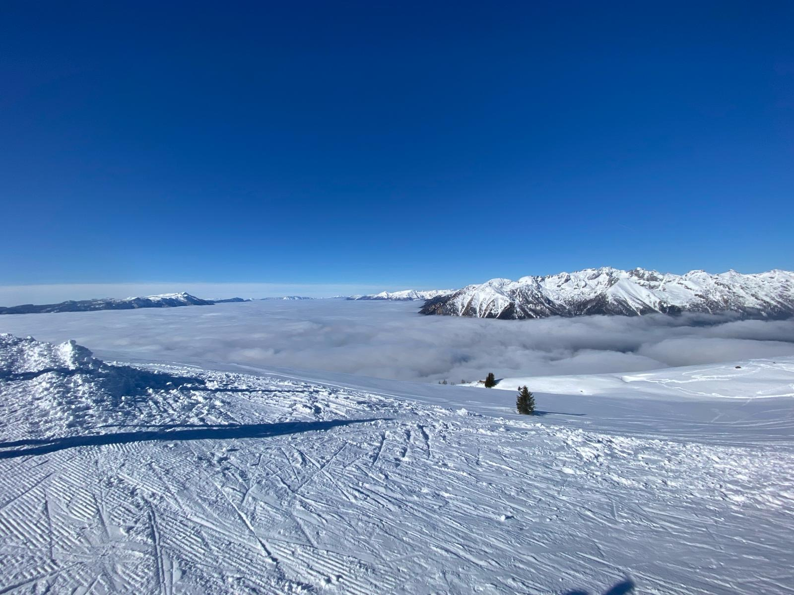
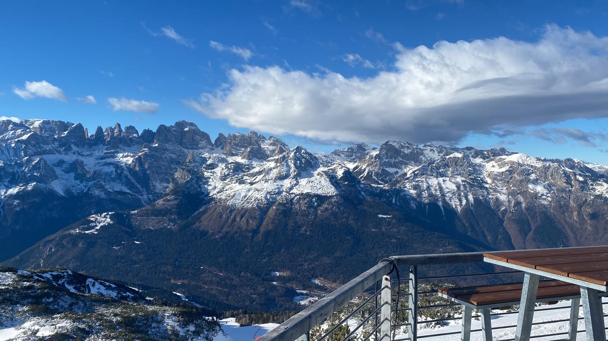
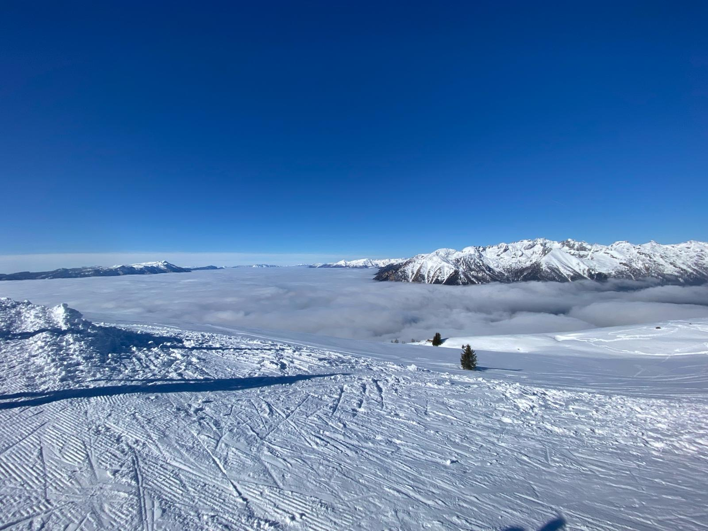
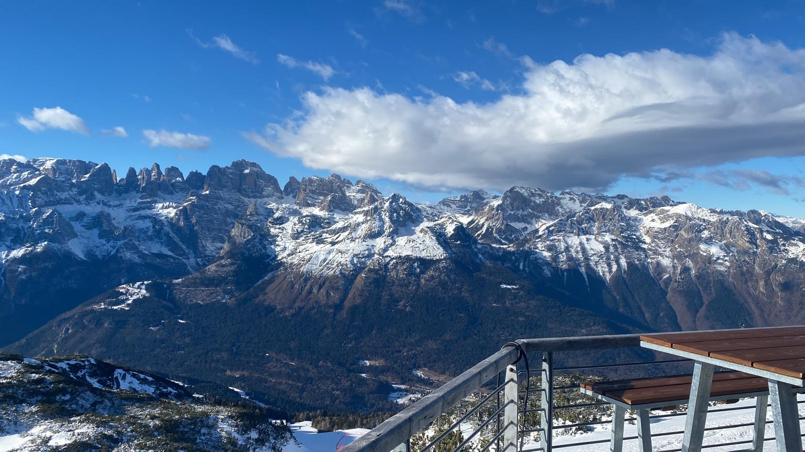
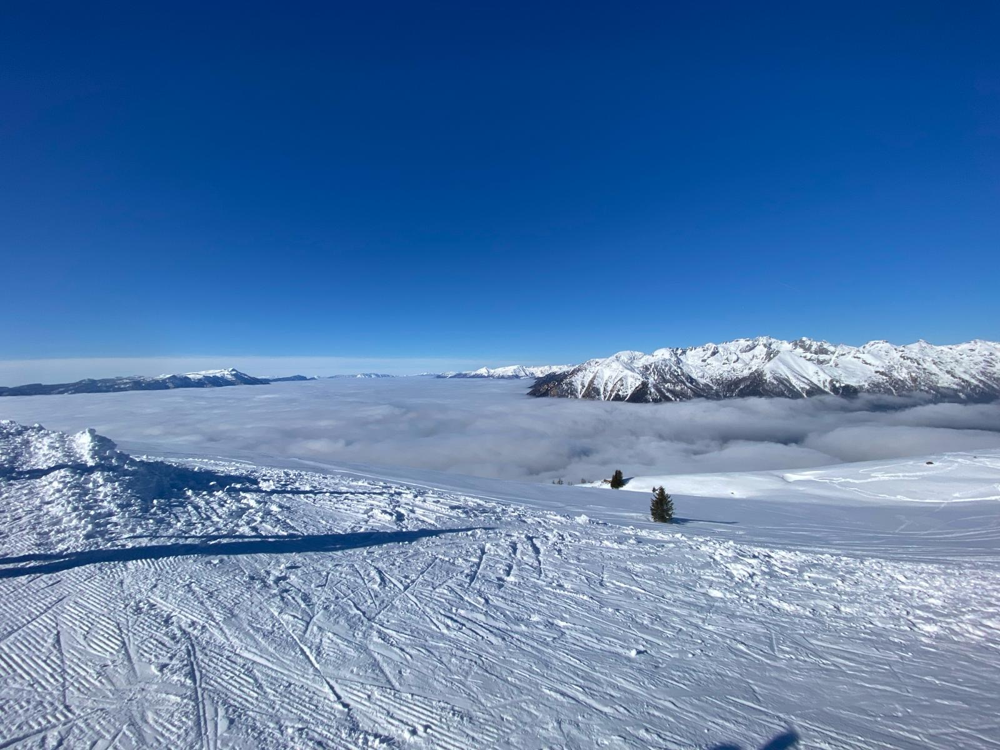
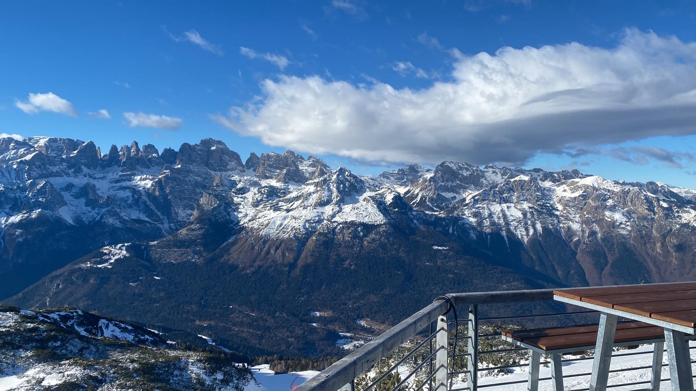

Paesi e Valli
Valli, paesi, cime e gruppi montuosi che si estendono per 80 chilometri in un territorio dominato dalla maestosità delle Dolomiti di Brenta e delle Alpi dell’Adamello. Un’area abbracciata dal Parco Naturale Adamello Brenta, che racchiude una molteplicità di ambienti: dai 370 metri di altitudine del Lago d’Idro e i campi coltivati della Valle del Chiese fino alle cime del Carè Alto, i ghiacciai perenni dell'Adamello e gli oltre 3500 metri della Presanella.

